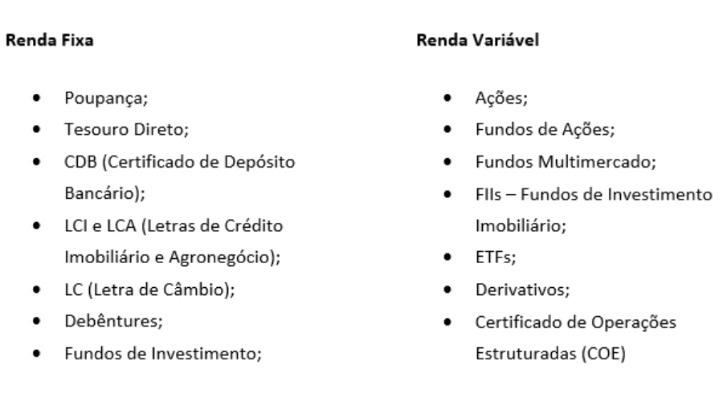

A confecção desta página é um dos requesitos para participar do Concurso Agrinho de Programação 2022.
Nela, abordaremos alguns conteúdos de Educação Financeira, vídeos e imagens que nos ajudarão no nosso dia a dia na escola.
Música é sempre bom para relaxar, viajar e também para ajudar a reforçar nossos estudos sobre vários assuntos com críticas e pensamentos que revolcucionam o mundo. Mas e na Educação Fianceiera, será que temos uma música que nos ajudaria a refletir sobre o assunto?
Aperte o play ou aguarde para começar automaticamente a música.

Você já se perguntou como investir e como organizar suas despesas e seus rendimentos? Vamos aprender um pouco sobre isso neste site!
Os vídeos abaixo vão nos ajudar a entender o que é Educação Financeira:
Tipos de investimentos:
Existem vários tipos de investimentos tanto fixos, quanto variáveis, e é bem fácil entender: o primeiro é o que você faz direto no banco, digitais ou não. O outro quando você faz correndo riscos, inclusive de perder todo seu capital investido.
Aqui veremos alguns tipos de investimentos fixos e variáveis.
Quais os "benefícios" dos investimentos?
Um dos principais beneficios de investir é a segurança financeira.
Se você perdeu o emprego ou tem dinheiro guardado, você tem que pensar sobre começar a investir.
"Dinheiro parado é pior que gastar a toa".
Você nunca se imaginou investindo no CDB, e todo mês usando os lucros para aumentar ainda mais seu dinhero?
Passo a Passo para investir
Quando falamos em investir, temos alguns passos a seguir:
- 1) Ter uma renda acima de 100 reais;
- 2) Ter uma conta num banco digital ou físico;
- 3) Usar um banco onde você pode investir pessoalmente falando com um gerente ou virtualmente;
- 4) Ter um objetivo em mente.
VAMOS VER ALGUNS PACOTES DE SERVIÇOS DOS BANCOS:
Como organizar seus gastos e suas rendas
Organizar suas despesas e suas rendas não é facil. Você precisa anotar todas as suas rendas e despesas e ter em mente que terá que cortar algumas despesas para obter lucro. Se você pesquisar no google aparece vários meios de você organizar suas receitas e despesas, mas não se esqueça:
"As despesas têm que ser sempre menor que a renda".
Veja mais um vídeo explicando detalhadamente como organizar suas receitas:
"Não adianta ganhar mil e gastar dois mil".
Educação Financeira e a Sustentabilidade
Precisamos ser sustentáveis!
O que é sustentabilidade? Consigo ser e agir com sustentabilidade, investindo e consumindo meus créditos de maneira consciente?
Sustentabilidade: um conceito que surgiu ganhou vida em Estocolmo em 1972, e ganhou força na Noruega num evento mundial chamado “Nosso Futuro Comum” (1987). No Brasil, ganhou forças na ECO92/Rio-92. Em 2015 a ONU (Organização das Nações Unidades) traçaram 169 metas e 17 objetivos para um desenvolvimento susentável até 2030. É possível subdividir esse conceito mais amplo em quatro tipos de sustentabilidade: a ambiental/ecológica, a empresarial, a social e a econômica.
Sustentabilidade Ambiental: na sustentabilidade ambiental ou ecológica, todas as ações que envolvem o meio ambiente ecológico e exploram recursos naturais sem desperdício, com consciência, como reflorestamento, replantio de árvores, preservação de áreas verdes, redução da exploração de recursos naturais (minérios, água dos aquíferos, madeira, petróleo), consumo controlado de água e controle da popuição dos rios, lagos e outros meios de sobrevivência da humanidade. Na novela Pantanal, por exemplo, o personagem Juventino se preocupa com a sustentabilidade no agronegócio e faz uma proposta de plantio para proteger o solo com pastagens enquanto as culturas perenes estão se desenvolvendo.
Sustentabilidade Empresarial: é um conceito que fala sobre ações adotadas por uma empresarial com a intenção de preservar o meio ambiente e favorecer o desenvolvimento sustentável da sociedade. Esta é uma iniciativa que contribui para a construção de uma imagem positiva da empresa perante o mercado. Exemplos de ações que definem a sustentabilidade empresarial. Alguns exemplo de sustentabilidade empresarial que também podem ser usados na nossa casa: reutilização de água, utilização de energia limpa, investir no reflorestamento, utilizar materiais reciclados e recicláveis, descarte responsável de resíduos, trabalho justo, agir sempre dentro as leis ambientais.
Sustentabilidade Social: tudo aquilo que melhora a qualidade de vida das pessoas e a utilização dos serviços públicos igual para todos. Investir na educação pensando no futuro das crianças e jovens, construção de hospitais, água tratada e esgoto para todos e todos as localidades, criação de programas de inclusão e acesso para deficientes a qualquer local público. A sustentabilidade social implica em gerar renda sem perder o foco na redução das desigualdades sociais, com o propósito de melhorar a qualidade de vida da sociedade. Contudo, isso não significa que a empresa vai deixar de lucrar ou correr atrás do lucro.
Sustentabilidade Financeira: quando a pessoa sabe administrar seu dinheiro com planejamento e não gasta mais do que ganha, como já dissemos acima, para não ficar com contas sem poder pagar. A sustentabilidade financeira se traduz no uso dos recursos de forma equilibrada, ou seja, é preciso garantir a segurança financeira por meio do uso eficiente dos recursos disponíveis, sempre com uma visão de longo prazo. Educação financeira e sustentabilidade estão diretamente relacionadas com simples ações diárias para reduzir o impacto no meio ambiente. Dessa maneira, essas ações estão atreladas aos 5 R’s.
Os 5Rs da Sustentabilidade

Vamos aprender brincando?
Quer se aperfeiçoar na área?
Você investe seu dinhero como? Clique aqui e acesse o curso de Matemática financeira: CPA e CEA da Plataforma Alura que fala sobre investimentos e aprenda a investir seu dinheiro. Não esqueça de organizar seus rendimentos e suas despesas.